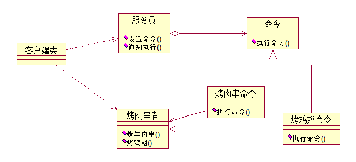
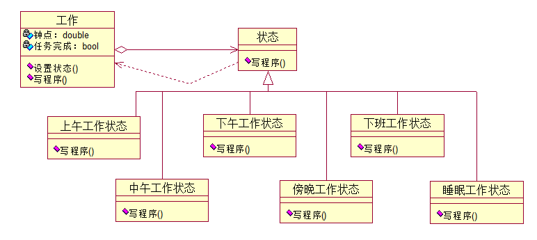

行为型模式：
定义了一种一对多的依赖关系,让多个观察者对象同时监听某一个主题对象.这个主题对象在状态发生变化时,会通知所有观察者对象,使它们能够自动更新自己.
观察者模式的关键对象是主题Subject和观察者Observer，一个Subject可以有任意数目的依赖它的Observer，一旦Subject的状态发生了变化，所有的Observer都可以得到通知。
Subject发出通知时并不需要知道谁是它的观察者，也就是说，具体观察者是谁，它根本不需要知道。而任何一个具体观察者不知道也不需要知道其他观察者的存在。
应用：
1，当一个对象的改变需要同时改变其他对象的时候，而且它不知道具体有多少对象有待改变时。
2，一个抽象模型有两个方面，其中一方面依赖于另一方面。观察者模式所做的工作就是在解耦合。让耦合的双方都依赖于抽象，而不是依赖于具体。从而使得各自的变化都不会影响另一边的变化。
课本实例：前台帮同事观察老板的情况
代码如下：
//通知者接口
//一般用一个抽象类或者一个接口实现.它把所有对观察者对象的引用保存在一个聚集里,每个主题都可以有任何数量的观察者.抽象主题提供一个接口,可以增加和删除观察者对象
interface subject
{
void attach(Observer observer);
void detch(Observer observer);
void notify();
string subjectstate
{
get;
set;
}
}
//将有关状态存入具体观察者对象，在具体主题的内部状态改变时，给所有登记过的观察者发出通知
class boss : subject
{
//同事列表
private IList <Observer>observers=new List <Observer>();
private string action;
//增加
public void attach(Observer observer)
{
observers.Add(observer);
}
//减少
public void detach(Observer observer)
{
observers.Remove(observer);
}
//通知
public void Notify()
{
foreach (Observer o in observers)
o.update();
}
//老板状态
public string subjectstate
{
get {return action;}
set {action=value;}
}
}
//抽象观察者
//为所有观察者定义一个接口,在得到主题通知时更新自己.
abstract class Observer
{
protected string name;
protected subject sub;
public Observer(string name, subject sub)
{
this.name = name;
this.sub = sub;
}
public abstract void update();
}
//看股票的同事
//实现抽象观察者角色所要求的更新接口
class stockobserver : Observer
{
public stockobserver(string name, subject sub)
: base(name, sub)
{ }
public override void update()
{
Console.WriteLine("{0}{1}关闭股票行情，继续工作", sub.subjectstate, name);
}
}
个人理解观察者模式不足：
对于已经封装好的类来说，即使他们对某一变化产生动作，但产生这一动作的方法名称也不一定一样，如果我用观察者模式的话，当我定义抽象观察者时，是很麻烦的，需要改动已经封装好的类的名称等内容。
处理不足的措施：
委托- 一个委托可以搭载多个方法，所有方法被依次唤起，重要的是它可以使得委托对象所搭载的方法并不需要属于同一个类。委托对象所搭载的所有方法必须具有相同的原形和形式，也就是拥有相同的参数列表和返回值类型。
实现：去掉了父类“抽象观察类”并将“更新”方法名改为各自适合的方法名
定义一个操作中的算法的骨架，而将一些步骤延迟到子类中。模板方法使得子类可以不改变一个算法的结构即可重定义该算法的某些特定步骤。
代码如下：
class testpaper
{
public void TestQuestion1()
{
Console.WriteLine("杨过得到，后来给了郭靖，练成倚天剑，屠龙刀的玄铁可能是（）a.球磨铸铁 b.马口铁 c.高速合金钢 d.碳素纤维");
Console.WriteLine("答案：" + answer1());
}
protected virtual string answer1()
{
return " ";
}
}
//学生甲抄的试卷
class testpaperA : testpaper
{
protected override string answer1()
{
return "b";
}
}
//学生乙抄的试卷
class testpaperB : testpaper
{
protected override string answer1()
{
return "c";
}
}
将一个请求封装为一个对象，从而使你可用不同的请求对客户进行参数化，对请求排队或记录请求日志，以及支持可撤销的操作。
优点:
1,能较容易地设计一个命令队列
2,在需要的情况下,可以较容易地将命令记入日志
3,允许接收请求的一方决定是否要否决请求
4,可以容易地实现对请求的撤销和重做
5,允许加进新的具体命令类不影响其他的类,因此增加新的具体命令类很容易
6,命令模式把请求一个操作的对象与知道怎么执行一个操作的对象分割开
课本实例：吃烤肉串
如图：

具体代码如下：
//抽象命令,需要确定"烤肉串者"是谁(用来声明执行操作的接口)
public abstract class Command
{
protected Barbecuer receiver;
public Command(Barbecuer receiver)
{
this.receiver = receiver;
}
abstract public void ExcuteCommand();
}
//具体命令类,执行具体的行为
//烤羊肉串命令
class BakeMuttonCommand : Command
{
public BakeMuttonCommand(Barbecuer receiver)
: base(receiver)
{ }
public override void ExcuteCommand()
{
receiver .BakeMutton();
}
}
class BakeChickenWingCommand : Command
{
public BakeChickenWingCommand(Barbecuer receiver)
: base(receiver)
{ }
public override void ExcuteCommand()
{
receiver.BakeChickenWing();
}
}
//烤肉者(知道如何实施与执行一个与请求相关的操作)
public class Barbecuer
{
//烤羊肉
public void BakeMutton()
{
Console.WriteLine("烤羊肉串");
}
//烤鸡翅
public void BakeChickenWing()
{
Console.WriteLine("烤鸡翅");
}
}
//服务员(要求该命令执行这个请求)
public class Waiter
{
private IList<Command> orders = new List<Command>();
//设置订单
public void SetOrder(Command command)
{
if (command.ToString() == "命令模式.BakeChickenWingCommand")
{
Console.WriteLine("服务员：鸡翅没有了，请点别的烧烤");
}
else
{
orders.Add(command);
Console.WriteLine("增加订单：" + command.ToString() + "时间：" + DateTime.Now.ToString());
}
}
//取消订单
public void CancelOrder(Command command)
{
orders.Remove(command);
Console.WriteLine("取消订单：" + command.ToString() + "时间：" + DateTime.Now.ToString());
}
//通知全部执行
public void Notify()
{
foreach (Command cmd in orders)
{
cmd.ExcuteCommand();
}
}
}
当一个对象的内在状态改变时允许改变其行为，这个对象看起来像是改变了其类。
状态模式主要解决的是当控制一个对象状态转换的条件表达式过于复杂时的情况。把状态的判断逻辑转移到表示不同状态的一系列类当中，可以把复杂的判断逻辑简化。
应用:
在软件开发过程中，应用程序可能会根据不同的情况作出不同的处理。最直接的解决方案是将这些所有可能发生的情况全都考虑到。然后使用if...ellse语句来做状态判断来进行不同情况的处理。但是对复杂状态的判断就显得“力不从心了”。
当一个对象的行为取决于它的状态,并且它必须在运行时刻根据状态改变它的行为时,就可以考虑使用状态模式了.
将特定的状态相关的行为都放入一个对象中,由于所有与状态相关的代码都存在于某个ConcreteState中,所以通过定义新的子类可以很容易 地增加新的状态和装换,这样消除了庞大的条件分支语句,状态模式通过把各种状态转移逻辑分布到State的子类之间,来减少相互间的依赖
课本实例：写程序的状态
如图：

代码如下：
//工作类
public class work
{
private State current;
public work()
{
current =new ForenoonState();
}
private double hour;
public double Hour
{
get { return hour; }
set { hour = value; }
}
private bool finish = false;
public bool TaskFinished
{
get { return finish; }
set { finish = value; }
}
public void SetState(State s)
{
current = s;
}
public void WriteProgram()
{
current.WriteProgram(this);
}
}
//抽象状态
public abstract class State
{
public abstract void WriteProgram(work w);
}
//上午工作状态
public class ForenoonState : State
{
public override void WriteProgram(work w)
{
if (w.Hour < 12)
{
Console.WriteLine("当前时间：{0}点 上午工作，精神百倍", w.Hour);
}
else
{
w.SetState(new NoonState()); w.WriteProgram();
}
}
}
//中午工作状态
public class NoonState : State
{
public override void WriteProgram(work w)
{
if (w.Hour < 13)
{
Console.WriteLine("当前时间：{0}点 饿了 午饭 犯困 午休", w.Hour);
}
else
{
w.SetState(new AfternoonState()); w.WriteProgram();
}
}
}
//下午工作状态
public class AfternoonState : State
{
public override void WriteProgram(work w)
{
if (w.Hour < 17)
{
Console.WriteLine("当前时间：{0}点 下午状态还不错，继续努力", w.Hour);
}
else
{
w.SetState(new EveningState()); w.WriteProgram();
}
}
}
//晚间工作状态
public class EveningState : State
{
public override void WriteProgram(work w)
{
if (w.TaskFinished )
{
w.SetState(new RestState());
w.WriteProgram();
}
else
{
if (w.Hour < 21)
{
Console.WriteLine("当前时间：{0}点 加班，疲累之极", w.Hour);
}
else
{
w.SetState(new SleepingState()); w.WriteProgram();
}
}
}
}
//睡眠状态
public class SleepingState : State
{
public override void WriteProgram(work w)
{
Console.WriteLine("当前时间：{0}点不行了，睡着了", w.Hour);
}
}
//下班休息状态
public class RestState : State
{
public override void WriteProgram(work w)
{
Console.WriteLine("当前时间：{0}点下班回家了", w.Hour);
}
}